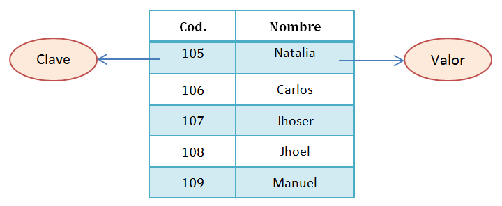

Estructuras de Datos II
Estructuras no lineales
- TreeSet
- TreeMap
TreeSet
TreeSet es una estructura de datos que nos permite almacenar y organizar datos.
Internamente es un Arbol Binario de Busqueda Balanceado, por lo que permite realizar operaciones de inserción, búsqueda y borrados de manera eficiente.
TreeSet

TreeSet
TreeSet almacena datos ordenados automaticamente al momento de insertarlos. Pero no guarda el orden de inserción.
NO almacena valores repetidos.
Declarar e inicializar un TreeSet
import java.util.TreeSet;
//Declaración de un TreeSet
TreeSet<Integer> tree = new TreeSet<>();
TreeSet<String> nombres = new TreeSet<>();
TreeSet: Métodos
- add(data): Inserta el valor data en el TreeSet.
- remove(data): Elimina el elemento data del TreeSet.
- clear(): Elimina todos los elementos del TreeSet.
- contains(data): Retorna un boolean que indica si el elemento data se encuentra en el TreeSet.
- isEmpty(): Retorna un boolean que indica si el TreeSet tiene elementos o no.
- size(): Retorna el número de elementos que se encuentran en el TreeSet.
TreeSet: Métodos
- first(): Retorna el elemento más pequeño que se encuentra en el TreeSet.
- last(): Retorna el elemento más grande que se encuentra en el TreeSet.
- pollFirst(): Retorna y elimina el elemento más pequeño del TreeSet.
- pollLast(): Retorna y elimina el elemento más grande del TreeSet.
Recorrer un TreeSet
Una forma facil de recorrer una estructura de datos no lineal es usanso for each:
for (TipoDato nombreVar : nomTreeSet) { ... }
import java.util.TreeSet;
TreeSet<String> nombres = new TreeSet<>();
for (String nom : nombres) {
System.out.println(nom);
}
TreeMap
TreeMap es una estructura de datos que nos permite almacenar y organizar datos.A diferencia del TreeSet, el TreeMap nos permite almacenar pares de Clave-Valor.
Internamente es un Arbol Binario de Busqueda Balanceado, por lo que permite realizar operaciones de inserción, búsqueda y borrados de manera eficiente.
TreeMap
TreeMap
TreeMap almacena pares de datos ordenados por su Clave automaticamente al momento de insertarlos. Pero no guarda el orden de inserción.
NO almacena Claves repetidas.
Declarar e inicializar un TreeMap
import java.util.TreeMap;
//Declaración de un TreeMap
TreeMap<Integer, String> estudiantes = new TreeMap<>();
TreeMap<String, Double> notas = new TreeMap<>();
TreeMap: Métodos
- put(key, value): Asocia value con la Clave key dentro del mapa.
- get(key): Retorna el valor asociado a key dentro del TreeMap.
- remove(key): Elimina el par Clave/Valor asociado a key del TreeMap
- clear(): Elimina todos los pares del TreeMap.
- containsKey(data): Retorna un boolean que indica si el elemento data se encuentra almacenado como una Clave en el TreeMap.
TreeMap: Métodos
- isEmpty(): Retorna un boolean que indica si el TreeMap tiene pares Clave/Valor o no.
- size(): Retorna el número de pares Clave/Valor que se encuentran en el TreeMap.
- firstKey(): Retorna la clave más pequeña que se encuentra almacenada en el TreeMap.
- lastKey(): Retorna la clave más grande que se encuentra almacenada en el TreeMap.
- keySet(): Retorna un Set con todas las Claves contenidas en el TreeMap.
Recorrer un TreeMap
De nuevo usamos el for each, pero en este caso para recorrer el listado de Claves:
for (TipoDatoClave nombreVar : nomTreeMap.keySet()) { ... }
import java.util.TreeMap;
TreeMap<Integer, String> estudiantes = new TreeMap<>();
for (Integer cod : estudiantes.keySet()) {
System.out.println(estudiantes.get(cod));
}